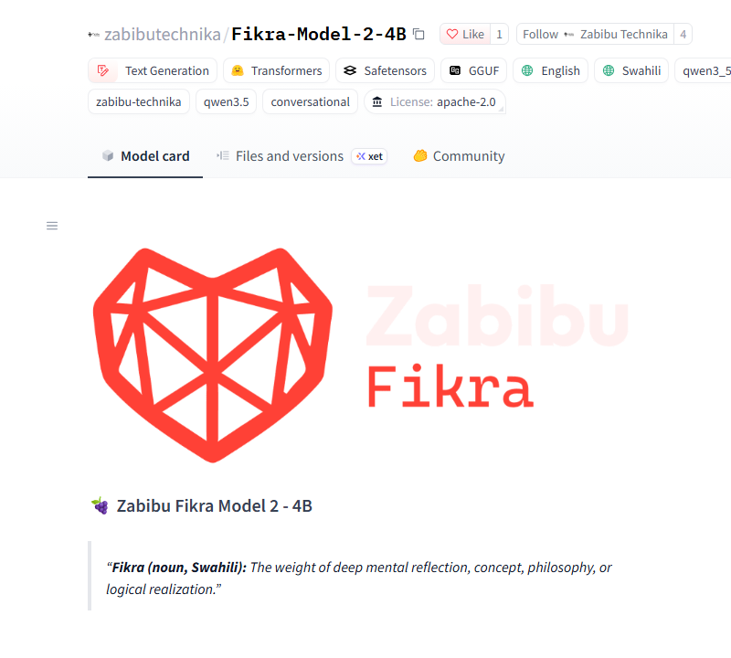
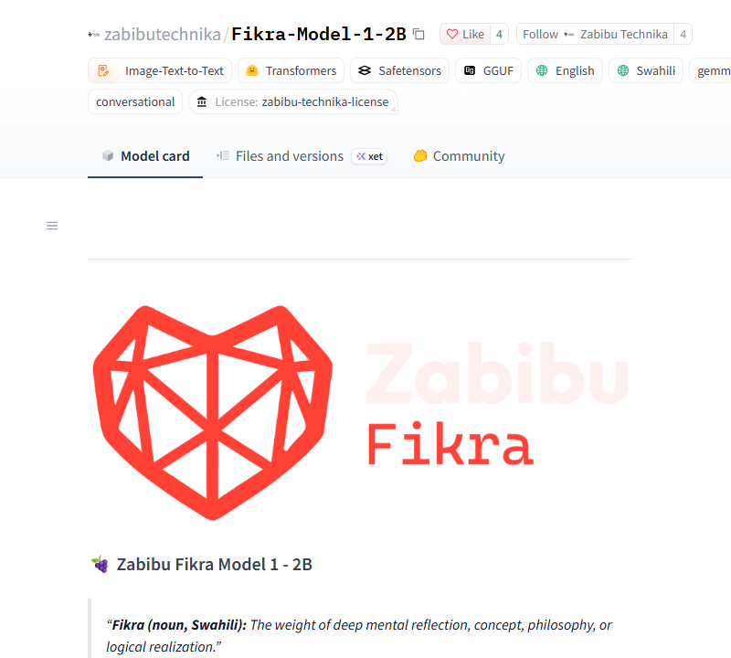

Swahili-native identity
The release suite checks Swahili identity and English–Swahili code-switching. Model 2 passes 4/4 without losing the thread.
A 4B-parameter, instruction-tuned model built in Nairobi for private, offline-first work. 262k context. English and Swahili. 75.5% MMLU and 91.3% on the Fikra release suite. Apache 2.0.
Release / 2026-11-06
Zabibu Fikra Model 2 – 4B (internal fikra-v2-e4) is a
4B-parameter instruction-tuned model developed by Zabibu Technika in Nairobi. It is
a Fikra-specialized fine-tune built on fikra-v2-e3, which derives from
Qwen/Qwen3.5-4B. It is designed for private, on-device, offline-first
deployment with Pan-African contextual awareness.
The headline is not just that it is bigger. It is that the model holds Swahili-native identity, English–Swahili code-switching, tool use, longform work, and safety boundaries — while still running locally. It scores 91.3% on the 115-case release suite and 90.0% on held-out paraphrases, with a +2.6 point Fikra-specific gain over the e3 checkpoint. The suite covers Kenyan data, canary-review, gaming, fintech, health, culture, and local knowledge — not just a generic benchmark.
“Preserves Qwen/Qwen3.5-4B's general capability while adding Fikra-specific behaviors.” From the Model 2 card
Apache 2.0. 262,144 tokens of context. 2.71 GB in Q4_K_M. This is a model you can keep on the laptop, in the clinic, in the shop, or in the field — without a hosted API in the loop.

All six categories in the 115-case Fikra release suite pass. Read the full card.
What Model 2 does
The release suite checks Swahili identity and English–Swahili code-switching. Model 2 passes 4/4 without losing the thread.
Structured tool calls for agent loops. Passes 4/4 and is designed to sit under Arif Agent and Weaver.
The UHI protocol is checked end to end in the release suite. Model 2 passes 5/5.
No unresolved safety case in the auto-checked suite. 3/3; external red-teaming is still pending.
262,144 tokens of context for long documents and long sessions. Passes 2/2 on the release suite.
Q4_K_M is 2.71 GB and runs on CPU through llama.cpp. No external calls are required at inference.
Benchmarks / what is measured
| Model | Params | MMLU | HellaSwag |
|---|---|---|---|
| Fikra Model 2 – 4B | 4.2B | 75.5% | 68.0% |
| Fikra Model 1 – 2B | 2B | 36.0% | 40.0% |
| Qwen2.5-3B-Instruct | 3B | 68.8% | 40.0% |
Not size-normalized. Most of the MMLU delta comes from moving from a 2B to a 4B base, not from Fikra training alone. The Fikra-specific gain is the +2.6 points over the e3 checkpoint and the identity/context categories. MMLU and HellaSwag measure English academic knowledge, not African-context capability. Run with lm-evaluation-harness 0.4.13, 10 samples per task, fp16, on Kaggle 2×T4; these scores are not comparable to full-suite published numbers. Raw JSONs live in benchmarks/.
Read BENCHMARKS.md · Phi-3.5-mini, Llama-3.2-3B, and Gemma-2-2B were incompatible or gated in this harness run.
Limits / read before deploying
The model card is explicit about the edges. Deployment should be too.
There is no published cross-language Swahili benchmark. The release suite measures it; MMLU and HellaSwag do not.
Recency stops at the training data. Give it retrieval for current facts.
It will hallucinate on specialized domains. It is not a replacement for retrieval or a curated knowledge base.
The model occasionally emits <think>...</think> blocks in visible output. Strip them in post-processing.
Qwen/Qwen3.5-4B biases carry through. They have not been audited here.
No unresolved safety case in the auto-checked suite, but no external red-team has been done.
Full limitations and safety notes are in the model card.
Previous release / Model 01
Zabibu Fikra Model 1 – 2B is the smaller release. It remains available for constrained hardware, earlier integrations, and the original license.
2B-class, 5.12B total parameters, 131,072-token context, English and Swahili, and a Q4_K_M GGUF. Licensed under the Zabibu Technika License 1.1 for evaluation and non-production use until 14 June 2030; Apache 2.0 from that date.

Run Model 2
# quick chat on the quantized build llama-cli -hf zabibutechnika/Fikra-Model-2-4B-GGUF:Fikra-Model-2-4B-Q4_K_M.gguf \ -p "Who are you?" --temp 0
# local server, 8k working context llama-server -hf zabibutechnika/Fikra-Model-2-4B-GGUF:Fikra-Model-2-4B-Q4_K_M.gguf \ --port 8080 -c 8192 -ngl 99
# full-precision weights import torch from transformers import AutoModelForCausalLM, AutoTokenizer model = AutoModelForCausalLM.from_pretrained( "zabibutechnika/Fikra-Model-2-4B", torch_dtype=torch.float16, device_map="auto") tok = AutoTokenizer.from_pretrained( "zabibutechnika/Fikra-Model-2-4B")
llama.cpp commands follow the GGUF card. Q4_K_M is 2.71 GB; F16 is 8.42 GB. Read the GGUF card.
The runtime Fikra Model 2 deserves. A proprietary, production-grade enterprise deployment layer purpose-built to handle Fikra models with maximum efficiency, resilient agentic workflows, and absolute local data sovereignty.
Quantization-aware scheduling, memory reuse, and a runtime tuned to Fikra's token layout. Less overhead between the model and the work.
Long-running tool loops, checkpoints, retries, and receipts. A workflow that survives a dropped connection or a closed lid.
The model, the memory, and the data stay on your hardware. No telemetry, no hosted dependency, no silent egress.
Available for commercial pilots. The open edition ships as Phosh.